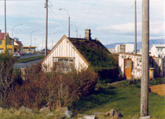
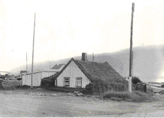
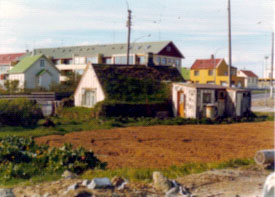

Grímsstaðarholt
Litla Brekka séð frá hlið. Á myndinni sjást timburklæddur gafl bæjarins, torfþak og reykháfur.
Nánari upplýsingar um Litlu-Brekku má finna á vefslóðinni: http://mennta.hi.is/vefir/saga/torf/2002/litlabrekka.

Litla Brekka
Litla Brekka var síðasti uppistandandi torfbærinn í Reykjavík. Hann stóð við Suðurgötu á Grímsstaðarholti, þar sem bílastæði Stúdentagarða eru núna, og var rifinn haustið 1981.


1918 – 1981
Litla Brekka var síðasti uppistandandi torfbærinn í Reykjavík, en bærinn var rifinn haustið 1981. Stóð við Suðurgötu á Grímsstaðarholti þar sem bílastæði Stúdentagarða eru núna. Bærinn á myndunum var byggður úr grjóti og torfi árið 1918 og var bærinn allur þiljaður að innan. Bærinn var byggður á rústum eldri bæjar sem stóð á sama stað. Hugsanlega hefur verið notað eitthvað byggingarefni úr eldri bænum í þann nýja. Þrátt fyrir að bærinn væri nokkuð fyrir utan Reykjavík var þar aldrei hefðbundinn búskapur. Litla-Brekka var sennilega ekki nema 40-50 fm. að gólffleti.
Grímsstaðarholt
Litla Brekka séð frá hlið. Á myndinni sjást timburklæddur gafl bæjarins, torfþak og reykháfur.
Nánari upplýsingar um Litlu-Brekku má finna á vefslóðinni: http://mennta.hi.is/vefir/saga/torf/2002/litlabrekka.
